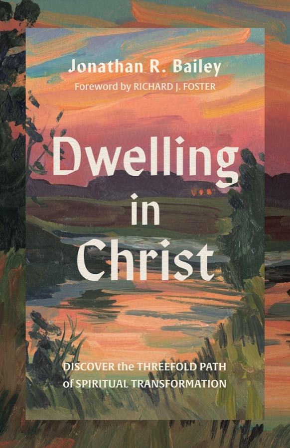

Bailey grew up raising his hand at altar calls and repeating prayers, waiting for the change that never came. Then he found Dallas Willard and Richard Foster, and through them the saints. This book is his walk through the oldest map of Christian growth, the Threefold Way: purgation, illumination and union. Each chapter trades a quick-fix habit of the mind for a slower, truer one, and he tells it through his own stumbling: a failed silent retreat, the death of his newborn son, a basket of chips he couldn't stop eating, and twenty years of learning to pray.
The problem
Bailey's name for the faith he grew up in: if I do A, God does B. Raise your hand, say the prayer, walk the aisle, and you will be changed tonight. The altar call was invented in nineteenth-century revivals to bring outsiders to a first decision. It drifted into weekly services as the way insiders were supposed to grow. It never worked for him. At ten, at twelve and at seventeen he did it again and again, and saw no difference between himself and his friends who didn't go to church. Finally, during one more altar call, he stood up and walked out the back.
Then, home from college, he picked up a book in his father's living room and read a line by Dallas Willard: spirituality wrongly understood is a major source of human misery. That was it. His longings had been real; his understanding had been wrong.
“I wasn't walking aisles anymore. I was walking a path.”
The map
Reading the saints Willard and Foster kept sending him to (Teresa of Ávila, Brother Lawrence, the desert monks, Gregory of Nyssa), Bailey noticed that Orthodox, Catholic and Protestant pilgrims described the same terrain. First a cleansing, then a growing light, then a deep oneness with God. The tradition calls it the Threefold Way. He treats it as a map, not a formula: you are already on it before you know its name.
The stages are linear and circular. You can be in purgation and get moments of union, or be far along and have old struggles come back. Emptying makes room for filling, burning makes brightness, pruning makes growth. Bailey writes the union chapters as an onlooker: he has tasted it, he says, but not entered it.
The Greek word telos means a thing's purpose: a clock's is to keep time, a caterpillar's to fly. Following the Orthodox bishop Kallistos Ware, Bailey reads Genesis 1:26 ("in our image, according to our likeness") as origin and destiny. The image is given; the likeness is gained. We are made in God's image so that we can grow into his likeness: not to become God, but to become like God, sharing in the divine nature (2 Peter 1:4).
To dwell in Christ is to develop in Christ.
His first silent retreat at a monastery was meant to be one grand, transforming act. By the evening he had already escaped once to a bookstore. That night every creak of the old building convinced him a monk was coming through the door. He wedged a chair under the knob, then grabbed his bag and ran to the car. He had arrived a hero and left humiliated. Part of him had wanted the story he would tell afterwards.
He kept picking up practices meant for monks (a three-day fast, an hour of meditation, memorizing all of 1 John) and dropping them. The desert father Abba Matoes preferred a light practice that lasts to a heavy one soon abandoned. Jesus' yoke is easy and his burden light: there is a yoke, but it should fit.
Stretch later, but the aim is never more intensity. We are not spiritual weightlifters adding plates; we are surfers learning to be in position for a wave we cannot make. It is grace that transforms, not the practices. John Chrysostom's test: don't tell me how long you fasted; show me that you were angry and became gentle.
The book's hardest chapter. At twenty-two weeks the doctor told Bailey's wife their son was already on his way, with less than a one-in-ten chance of surviving. She fought to carry him ten more days. He lived eleven days behind plastic and tubes. The first time his parents were allowed to hold him was when the machines came off, and he died in their arms within minutes while his father whispered "Daddy's got you."
Training, he realized, was something he did. Affliction was being undone.
People offered him a God who sends tragedy as a lesson, the puzzle piece that will make sense later. He found it cold. With the apostle John he holds that God is light, with no darkness in him. Tragedy is a distortion of a good creation, not part of its design. God did not will Smith's death, but he was present in it. And in Christ God suffered too: Jesus had his own "why" on the cross. God chose not to remove suffering but to share it.
Faith shifted from a set of answers to a relationship: not agreeing that something is true but trusting that someone will be true. Bailey also lets himself hate the death of his son, and found that hatred led back to love, because we only hate what threatens something we love.
When something small annoys him, he sits with it and keeps asking why:
In his college dorm he fought a thought all day with every tactic he had (an index card with 1 Corinthians 10:13, a rubber band on the wrist, changing rooms), read the verse three times that night, and gave in anyway. Then he drummed his fists into the mattress.
Gluttony is his lifelong vice. At a Mexican restaurant with his family he allowed himself ten chips with the queso, counted them through a game of tic-tac-toe with his son, and at ten stared at the basket while his daughter tugged his sleeve. His hand went back in. It is still with him. What the repeated failure has produced is not freedom from gluttony (not yet) but humility, then compassion for himself, then compassion that spills over to his wife, kids and coworkers. Some failures stay not to condemn us but to deepen us.
Why allow temptation at all? Because a world without real choice would be a script, and love that is not freely given is not love. God waits for our consent, like Mary's "Be it unto me." When self-loathing returns after a fall, Bailey pictures the beach in John 21: a charcoal fire, and Jesus asking three times, "Do you love me?" There is a timid, torn yes he gives to temptation, and a deeper yes from the core of who he is: yes to loving Christ, yes to being made like God. He builds his life on the deeper one.
Worship nights, conferences, a new podcast pastor: for years Bailey equated feeling moved with being close to God. Even after he found the disciplines, he collected them like sparks and ended up with what Jesus warned about in Luke 14: a tower started without counting the cost, left half-built.
The ancient answer is a Rule of Life. After Christianity became legal in 313, faith grew comfortable, and men and women went into the desert. Anthony was the seed, Pachomius (a former soldier who built community) the sapling, and Benedict the tree. His first attempt at leading monks was so severe they tried to poison him. Only later, after years of studying earlier rules, did he write the moderate, kind Rule of around 516 that has shaped monasteries since. Our task is to become little Benedicts.
On a bucking plane he prayed the prayer he had always prayed: get me through this and I'll take you seriously. Prayer had been insurance: bless the food so I don't get sick, pray before games so I don't get hurt. Slowly he became less interested in what he wanted and more in who God is.
In The Way of a Pilgrim, a nineteenth-century Russian wanderer learns from an old monk to repeat one line until it prays itself. Bailey, a husband and father, is not a pilgrim, so he transposes: same melody, different key. A monk's hours in a cell can become ten minutes in a parked car; seven fixed prayer times can become a pause at lunch.
His practice: five minutes, Monday to Friday mornings. A candle, the same chair, back straight (or feet up with coffee on cold days), eyes lightly closed, one big breath as if diving to the bottom of a pool, then the prayer in the mind, not on the lips, until the timer goes. That's all.
In an English test he hadn't studied for, his eyes slid to his neighbour's paper, and the WWJD bracelet on his wrist did nothing. A reminder is not a power. Imitation without transformation is exhausting. Foster and Willard showed him the difference between trying and training: you can't copy the fruit of Christ's life without the roots.
After twenty years of training he has changed: less rage, better listening, gentler. But less and slower than he hoped. When a disciple asked Abba Ammonas why it was taking so long, the old monk said he had spent fourteen years in the desert asking God, night and day, for victory over anger. Discouraging, because it will be slow; hopeful, because monks aren't faster either. When the slowness bites, Bailey reaches for three masks:
Push harder: more intensity, more discipline. It looks like commitment and feeds pride.
Off: intensity is not virtue. Be a beginner, a child.
The problem must be missing information. One more book, one more tradition. Ideas about love stand in for love.
Off: read slowly, one book over months. Stop binging.
If only I had different circumstances: when the kids are older, in a quieter place, I'd finally grow.
Off: trust the soil you've been given. Interdependence, not independence.
A desert elder gave a novice a dry stick to water every day from a distant well. For three years nothing happened. Then it blossomed. The novice kept going not because he saw progress but because he trusted the one who gave the task. Bailey reaches for masks when he trusts the process more than the person who transforms him. Effort is essential; grace is decisive.
Drop a pebble in a pond and you get small ripples; drop a boulder and you get waves. The greater the goodness, the greater the glory. We don't try to make waves; they come.
After his first sermon at his father's church, the nerves faded and a quieter craving took their place: Was I good? He went looking for compliments from people who weren't obliged to give them. The old name is vainglory, empty glory, and it doesn't fade with maturity; it hides inside our goodness. The longing to be seen is holy (a baby searching for her mother's smile). Union doesn't remove it; it fills it, because God sees us and delights in us. Transactional faith rushes to be heard; transformational faith makes us people worth listening to.
Bailey's drawing: as each of us moves closer to God, we move closer to each other.
On 23 December he drove an hour to pick up a last-minute Christmas present, listening to an audiobook. Fifteen minutes in, he started to cry and couldn't stop. In the toy store, a strange tenderness for every stranger came over him. The weight of self had lifted. It faded within two days, but he had tasted charity: caritas, holding something dear, the love that God is. Father, Son and Spirit pour themselves into one another (the old word is perichoresis), and union means being drawn into that flow. To love God is to love what God loves.
When his teenager shrugged about an upcoming test, Bailey sat them down and mapped out the studying himself. Control was the right love for car seats and bedtimes: a starter love, not meant to last. He wants God to do the same to him (do the work for me, take the desire away before it tempts me, make me bloom so I don't have to grow), but the all-powerful God never overpowers. Love formed without freedom isn't love.
Rome used crucifixion as a public statement of power. Jesus climbed onto the empire's symbol of control and turned it into the symbol of a love that doesn't coerce. Bailey calls this cruciform love. Its everyday shape: letting someone else have the last word, slowing your pace for someone who can't keep up, giving without being thanked. Hard at first; natural once love becomes who you are.
Maximilian Kolbe took another prisoner's place in Auschwitz. A sacrifice binds lives together only when it is seen for what it is. Bailey had learned the cross as a courtroom (God the judge, him guilty, Jesus the substitute) and came away feeling spared, but not wanted. And the logic spread: if salvation is a transaction, God is transactional, and so am I.
“It is finished.” Following the theologian John Behr: John's Gospel opens like Genesis, and in Genesis humans are the only creation not followed by "and it was so". We are made with our participation. On the cross that creation is completed: Jesus is the first fully human being, image fully grown into likeness. He washed his friends' feet, let his betrayer kiss him, healed his captor's ear, comforted a dying thief, restored Peter. Taking up our cross is not only being saved; it is being made.
At a funeral an old pastor said of the dead man, "the moment he breathed his last, he was made perfect." Willard called this the Cosmic Car Wash: perfection without participation. Willard and Foster both warned that it undermines any serious change in this life. A God who is slow, patient and relational in this life doesn't change the rules at death. A marriage isn't made in one vow; union with God isn't either.
For further reading he points to other spiritual itineraries: Climacus's Ladder of Divine Ascent, Dante's Divine Comedy, Bunyan's Pilgrim's Progress and Underhill's Mysticism.
You came from God. You belong to God. And you are going to God.
Try it
Bailey's advice: start small, write it down, keep it a living document, and let love overrule it. Your draft stays in this browser only.
Ten things to keep